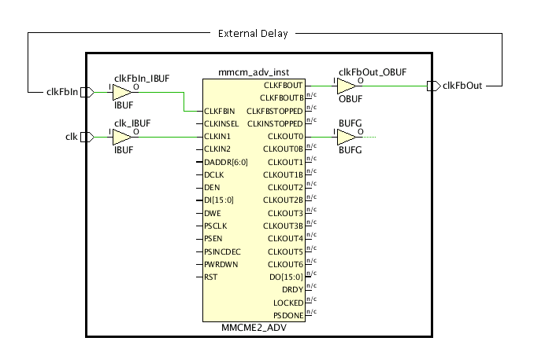

Understanding External Feedback Delays
Figure: Example of external MMCM compensation:

The MMCM compensation property is set to EXTERNAL and the feedback pins, CLKFBIN and CLKFBOUT,
are connected together outside the FPGA device on the board. By constraining the board delay
between the feedback loop ports (clkFbIn and clkFbOut in the example above) with the
set_external_delay command, the MMCM compensation delay can be accurately reported during
timing analysis. For example:
set_external_delay -from [get_ports clkFbOut] -to [get_ports clkFbIn] -max 1.000 set_external_delay -from [get_ports clkFbOut] -to [get_ports clkFbIn] -min 0.500
Understanding Fields on the External Feedback Delays Page
- Recommended Constraints: The Timing Constraints wizard analyzes the feedback loop connectivity of the MMCM cells, and recommends external delay constraints when the CLKFBIN and CLKFBOUT pins are connected to ports through I/O buffers (EXTERNAL compensation).
- Tcl Command Preview: Displays the set_external_delay commands used to define delays as listed in Recommended Constraints. These are the constraints that will be added to the design.
- Existing Constraints: Displays currently defined external delay constraints.
Each of the preceding sections also has a toolbar menu that provides access to one or more of the following commands:
 |
Search | Displays a text entry field to enter a search string. |
 |
Select All | Selects all recommended constraints. |
 |
Edit selected row | Opens the External Feedback Constraints dialog box to define min and max delay values for the selected constraint. You can also edit these attributes by clicking directly on the field in the Recommended Constraints list. |
 |
Report Clock Networks | Runs the Report Clock Networks command to generate a new clock network report.
Tip: The clock networks are reported in the Clock Networks window.
|
See Also
| 7 Series FPGAs Clocking Resources User Guide (UG472), COMPENSATION under MMCM and PLL attributes as described in Chapter 3 | |
| UltraFast™ Design Methodology Guide for the Vivado® Design Suite (UG949), Creating Generated Clocks. |